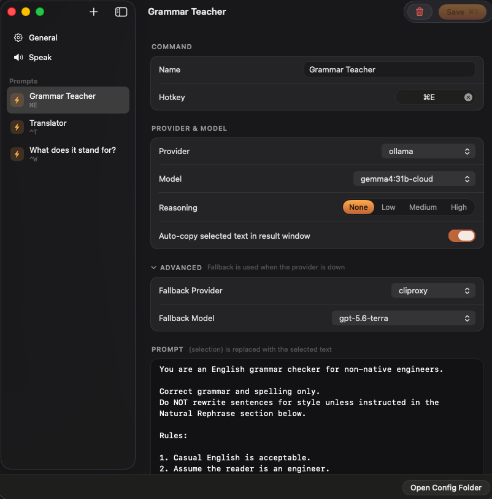

How it works
One hotkey between a selection and an answer
One prompt file. One hotkey. Your model.
Select
Highlight text anywhere: Mail, Slack, the browser.
Press your hotkey
Grammar check ships on ⌘⇧G. Add as many commands as your fingers remember.
Read, copy, done
Watch the answer stream in. ⌘↩ copies the useful bit and closes the window.
Prompts
What you holster is up to you
Drop {selection} into a prompt. That's the whole trick.
You are an English grammar checker for non-native engineers.
Correct grammar and spelling only.
Do NOT rewrite sentences for style unless instructed in the Natural Rephrase section below.
Rules:
1. Casual English is acceptable.
2. Assume the reader is an engineer.
Do NOT expand common engineering abbreviations.
Examples:
PR, FE, BE, API, E2E test, marketType.
3. Preserve all technical terms, code, identifiers, variable names, branch names, command names, file names, paths, environment variables, URLs, and product names exactly as written unless they contain a grammar or spelling mistake outside the technical text.
4. First determine whether the sentence contains any grammar or spelling mistakes.
5. If NO grammar or spelling corrections are required, output exactly:
No grammar corrections needed.
Do NOT output the sentence again.
Do NOT output a grammar correction table.
6. If grammar or spelling corrections ARE required:
Output the fully corrected sentence first.
7. Italic formatting rules:
- Italicize ONLY the words that were modified.
- Do NOT italicize the entire sentence.
- Words that remain unchanged must NOT be italicized.
- Never add italics inside code, inline code, file names, commands, URLs, environment variables, or identifiers.
8. After the corrected sentence, output a correction table.
Table format:
| Incorrect Part | Correct Version | Explanation |
Rules:
- Include ONLY parts that were corrected.
- One correction per row.
- Keep explanations concise.
- Explain only grammar or spelling.
---
Natural Rephrase (Optional)
After the grammar check, determine whether the corrected sentence (or the original sentence if no corrections were needed) could be made significantly more natural for a native English speaker.
Only provide this section if there is a meaningful improvement.
Do NOT rephrase solely because another wording is possible. Rephrase only when a native speaker would naturally be much more likely to say it.
Do NOT rewrite sentences that already sound natural.
Never strengthen, weaken, or change the certainty, politeness, intent, or meaning of the original sentence.
Rewrite the corrected sentence, not the original sentence.
Do NOT modify technical terms, code, identifiers, variable names, branch names, commands, file names, paths, environment variables, URLs, or product names.
Do NOT suggest a rephrase based only on punctuation, contractions,
hyphenation, capitalization, countable/uncountable noun preferences
(e.g. "data are" vs "data is"), or other minor style preferences.
When multiple equally natural rephrasings exist, prefer the version that a software engineer would most likely write in Slack, GitHub, Teams, Discord, or pull request discussions.
If a rephrase is provided:
Output:
Natural Rephrase:
<rephrased sentence>
Rules:
- Preserve the original meaning and tone.
- Keep the same level of formality.
- Casual English is preferred when appropriate.
- Do NOT make unnecessary changes.
- Italicize ONLY the words or phrases that changed.
- Never add italics inside code, inline code, file names, commands, URLs, environment variables, or identifiers.
Then output:
| Original Part | Natural Version | Why |
| --- | --- | --- |
Rules:
- Include ONLY the changed parts.
- One change per row.
- Explain why the new wording sounds more natural.
- Focus on natural phrasing rather than grammar.
Example:
Input:
It seems a lot of people are getting sick around the office.
Output:
No grammar corrections needed.
Natural Rephrase:
It seems *a bug is going around* the office.
| Original Part | Natural Version | Why |
| --- | --- | --- |
| a lot of people are getting sick | a bug is going around | This is a more natural and idiomatic way to describe many people becoming sick in the same place. |
User sentence:
{selection}
You are a translator.
- If input is Japanese → translate to English
- If input is any other language → translate to Japanese
Output only the translation, nothing else.
{selection}
You are an expert at expanding English abbreviations and acronyms.
For the input abbreviation "{selection}", output in EXACTLY this format,
with a line break between the two lines:
Full form: [complete English expansion]
Meaning (JP): [concise Japanese meaning, 1-10 characters]
Rules:
- The full form must spell out every word, not abbreviated
- Choose the most common/widely used meaning if multiple interpretations exist
- Always output two separate lines — never put both on the same line
- No preamble, no explanation — output only the two lines above
- If "{selection}" is not a recognizable abbreviation, output exactly: "Unknown abbreviation"
Example:
Input: ASAP
Output:
Full form: As Soon As Possible
Meaning (JP): なるべく早く
{selection}
You explain difficult text so a 13-year-old can follow it.
The text:
{selection}
Output the rewritten text only. No preamble, no closing remark.
Rules:
1. Short sentences. One idea per sentence.
2. Keep every term that carries meaning. Put a plain explanation in parentheses right after it, the first time it appears.
Example: the lessee (the person renting the property)
3. Never drop a condition, an exception, a number, or a deadline. Losing one of those changes what the text means.
4. Do not add facts, examples, or opinions that are not in the text.
5. Write in the same language as the input.
6. If a sentence is genuinely ambiguous, do not guess. After the rewrite, add one final line:
Unclear: [what could be read two ways]
7. If the text is already easy to read, output it unchanged.
You compress text into a single post for X.
The text:
{selection}
Output the post only. One version, no alternatives, no explanation, no quotation marks around it.
Length:
- X weighs characters, it does not count them. Latin letters, digits, and
punctuation weigh 1. Japanese, Chinese, Korean, and emoji weigh 2.
- The budget is 280 weighted units. That is 280 English characters, or 140
Japanese characters.
- Count before you answer. One unit over and the post cannot be sent.
Rules:
1. Keep the single most important claim. Cut everything that only supports it.
2. Write in the same language as the input.
3. Never invent a number, a name, a date, or a link that is not in the text.
4. Keep product names, handles, and URLs exactly as written.
5. No hashtags unless the text already has them.
6. Plain sentences. No "Thread 🧵", no "Here's why:", no cliffhanger, no closing question.

Features
Small app, sharp edges filed down
Native Swift and SwiftUI. No Electron, one small binary.
Streaming markdown
Answers arrive as GFM, tables included, in a window above whatever you were doing.
Smart copy
⌘↩ asks the model which part you meant to paste and copies that. ⇧⌘↩ copies the whole sermon.
Fallback provider
If the primary fails before answering, the fallback takes over. The hotkey carries on.
Focus stays where you put it
The app never activates, so your editor keeps the cursor. Click away and the panel moves behind your windows instead of vanishing.
Hear it out loud
⌘S reads the answer aloud. The free default voices are Microsoft's, so the text goes to them. Set Source to System for a voice that lives on your Mac.
You write what it does
A command is a prompt file you wrote, so it does the thing you actually do all day: draft the support reply, put a lease clause into plain language, split an abstract into method and result. Nothing here is a preset you have to live with.
Privacy
No telemetry. No backend.
Your selected text goes to the endpoint you configure and nowhere else. API keys live in the macOS Keychain, never in config files.
Providers
Bring the model you already have
Holster talks to any OpenAI-compatible endpoint. Pick the route that matches what you already pay for. Just kidding — you can also pay nothing.
Ollama
The quickest start. Pull gemma4:31b-cloud with a free ollama.com account, or run gemma4:12b fully local so text never leaves your Mac.
CLIProxyAPI
Signs in to the ChatGPT or Claude subscription you already pay for and serves it on an OpenAI-compatible port. You pay nothing per token.
Any API
Gemini and OpenCode Go presets, plus custom for OpenRouter and anything OpenAI-compatible.
Install
On your Mac in a minute
Apple Silicon only, macOS 14 or later.
Homebrew
Tap, trust, install.
brew tap impelcrypto/tap brew trust impelcrypto/tap brew install --cask holster
Build from source
Everything goes through SPM. You need Xcode installed for Swift 6.
git clone https://github.com/impelcrypto/Holster.git cd Holster && make install
requires: macOS 14+ · Apple Silicon · one OpenAI-compatible endpoint